Кто я

Тим Маринин, marinin.xyz.
Software Engineer @ EPAM. Организовываю NodeSchool SPb.
Тим Маринин, @marinintim, marinin.xyz. 2016.
Рассказывает Тим Маринин
Тим Маринин, marinin.xyz.
Software Engineer @ EPAM. Организовываю NodeSchool SPb.
Мы принимаем за должное то количество сервисов, которые используем.
Гитхаб, ВК, Инстаграм, Медиум, Твиттер, Сворм — это всё веб-сервисы про создание и потребление контента.
Идентичность (identity) контролируется сервисами больших компаний.
Сохранность и доступность контента контролируется сервисами больших и не очень компаний.
Во многом, это неосознанность. Я отдаю свои данные компаниям, не задумываясь о том, что будет с ними дальше. Я не контролирую, кто их увидит и как долго они будут храниться.
 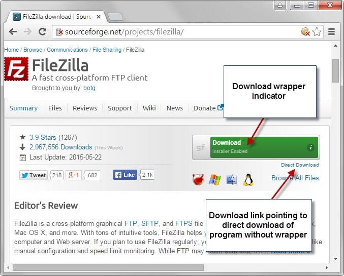
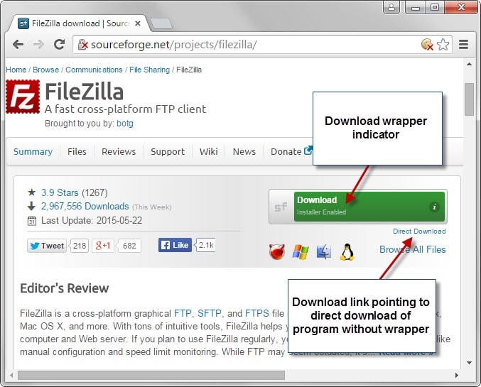
 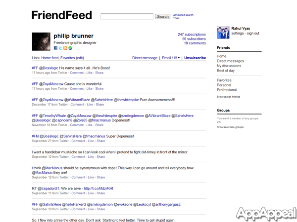
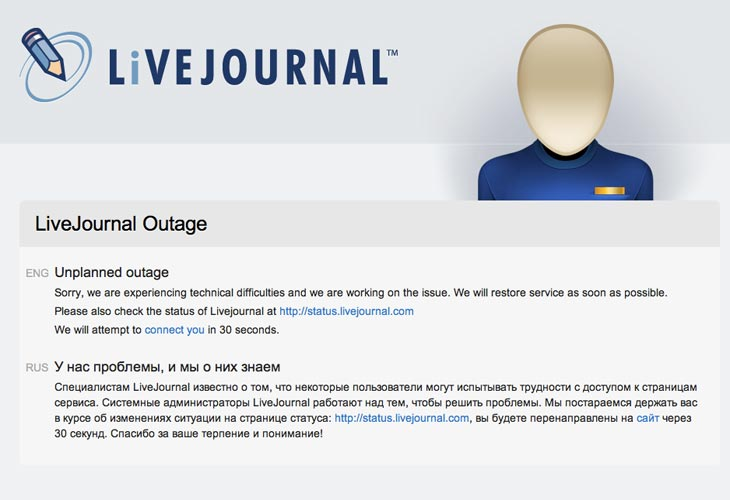
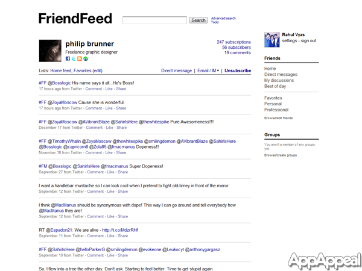
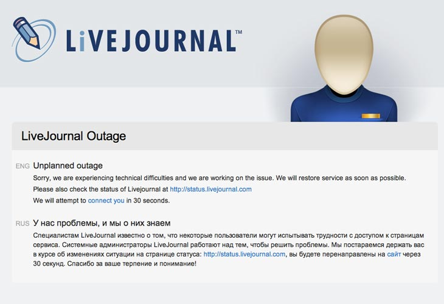
 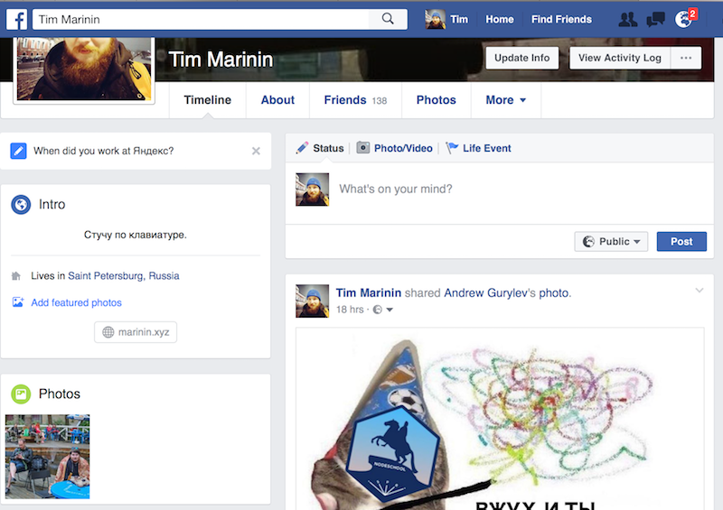
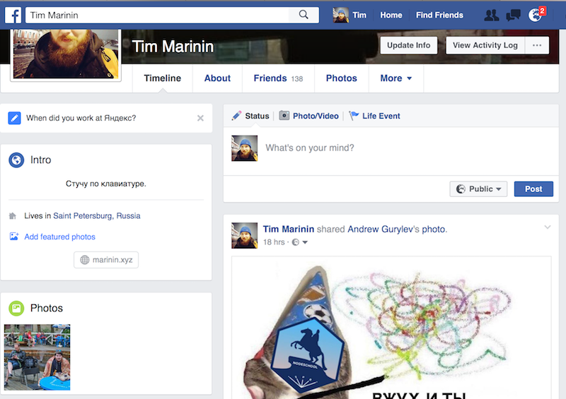
 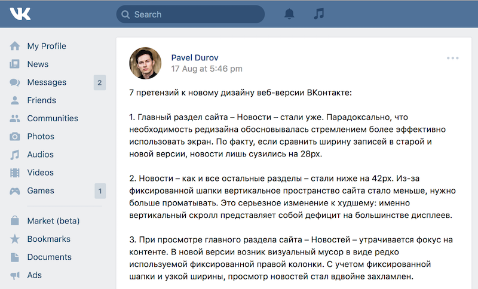
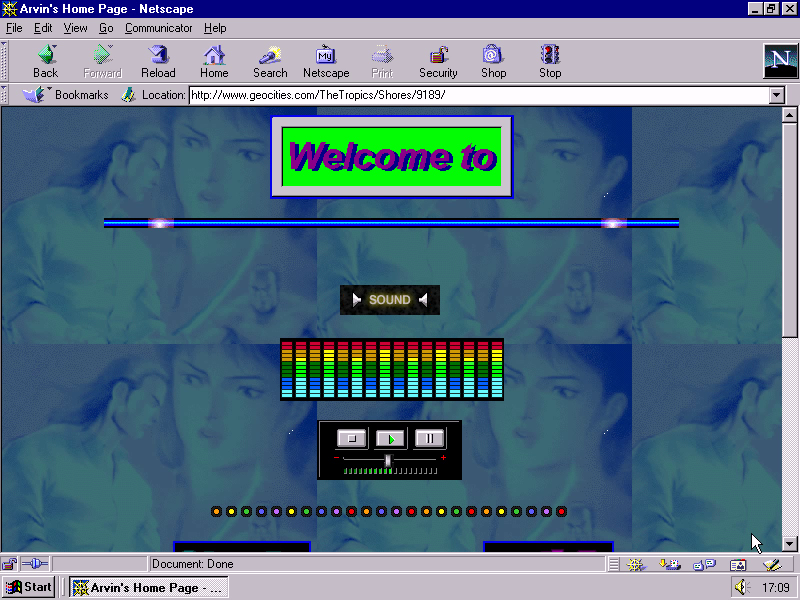
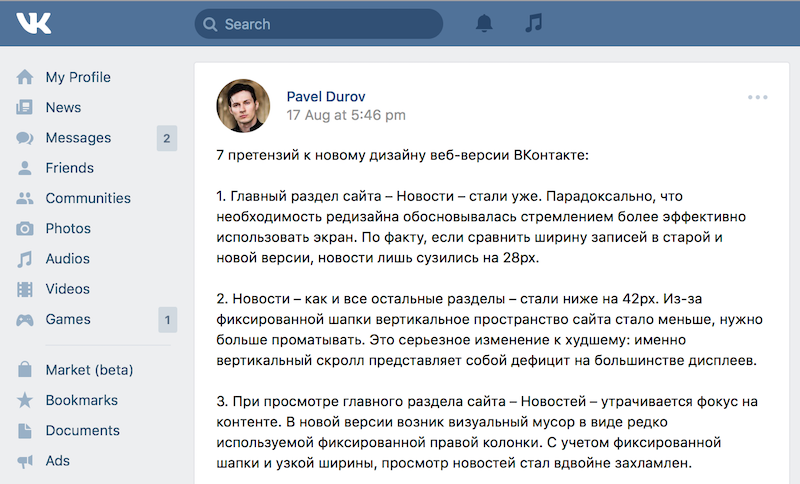
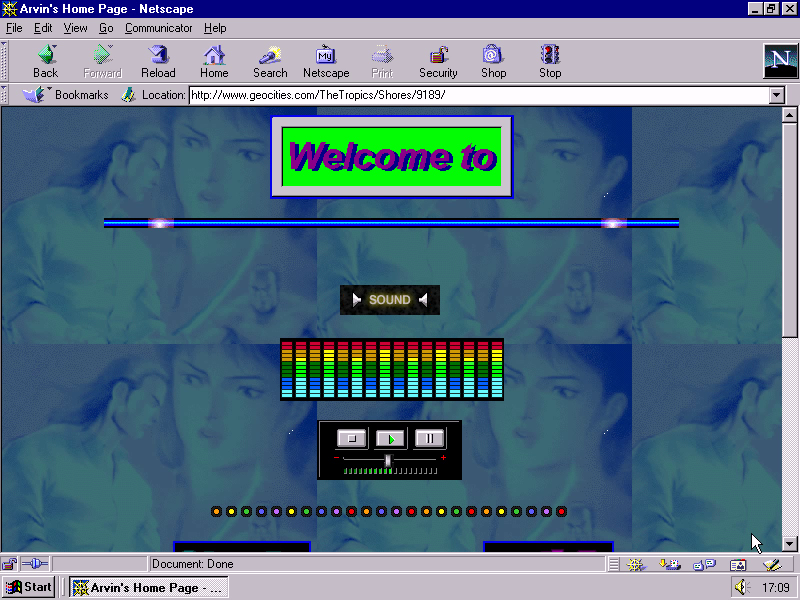
Когда какой-то сервис становится «центром», он становится и единой точкой отказа.
Представьте, что закрылся Кодпен. Сколько демок умерло? Сколько постов стали бесполезными?
Медиум? Гитхаб? Инстаграм?
Сервисы дают нам много хорошего. Иногда они дают нам новые форматы (инстаграм), иногда они дают нам возможность работать, как раньше было сложно или невозможно (гитхаб).
Но есть вещи, которые лучше делать самому.
people-focused alternative to the "corporate web"

Если тебя знают как friendfeed.com/random_name, то что станет с тобой после его закрытия?
Если тебя знают как random-guy.net, то всё зависит только от тебя.
В истории веба был такой период (circa 2003).
Веб очень быстро перескочил от "незначимой" вещи к тому состоянию, где он — часть нашей жизни.
Это надо принять: веб останется надолго, стоит подумать, как о нём заботиться и о своем месте в нём.
У нас есть две малоприятные альтернативы: полная анонимность и вход в интернет по [корпоративному] паспорту.
Но где пространство, которое можно назвать домом?
Индивеб — далеко не первая инициатива в этой области. Был, в том числе, Federated Social Web.
Но их фокус — на UX и результате, а не килобайтах обсуждений.
Челик Тантек. Аарон Пареки. Бен Вердмюллер.
Некоторые из них — в W3C и работают над стандартизацией, в том числе, и индивеб-технологий: WebMention, MicroPub.
Посты, фотографии, код, картинки. Индивеб даёт принципы, из которых, как из конструктора, можно собрать свою "федерализированную" сеть, которая лучше тех, что есть.
Автоматический кросс-постинг со своего сайта в соцсети. Сбор фидбека из соцсетей обратно на свой сайт.
Я не буду упоминать закон Меткалфа Я не буду упоминать закон Меткалфа Я не буду упоминать закон Меткалфа
IndieAuth: навроде Sign-in with Facebook/Github/Twitter, позволяющая сделать привязку к этим сервисам непрямой.
WebMention: пингбэки на стероидах^W, но сделанные нормально
«Мероприятия»: эти люди могут отвечать на приглашения со своих сайтов
В качестве основных «блоков» используется HTML с микроформатами.
<main class="h-card"><h1 class="p-name">Tim Marinin</h1><p class="p-note">As seen on <a rel="me" href="https://github.com/marinintim">Github</a>,<a rel="me" href="https://twitter.com/marinintim" rel="me">Twitter, ...You can write me at mt@marinin.xyz.</p></main>

* если вам это интересно. Имеются противопоказания, посоветуйтесь со своим веб-мастером. Не гарантируется достижение настоящей независимости. Terms and conditions apply. Сопротивление бесполезно. All your base are belong to us. Взрослые — это мы. Если не мы, то кот.
Вы делаете контент. Вы публикуете его в Сети.
К сожалению, биты гниют быстрее бумаги. Что останется после нас?
Я видел фотографии прадеда, увидят ли правнуки мои селфи?
Вы, конечно, про них слышали. Wayback machine. #250 в мире, 150 человек в штате.
Как и Википедия, им тоже нужны деньги.

Сложно представить колонию на Марсе, которая переписывается с Землёй через Слак. Через почту — легко.